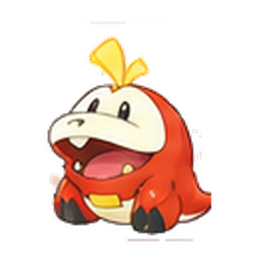
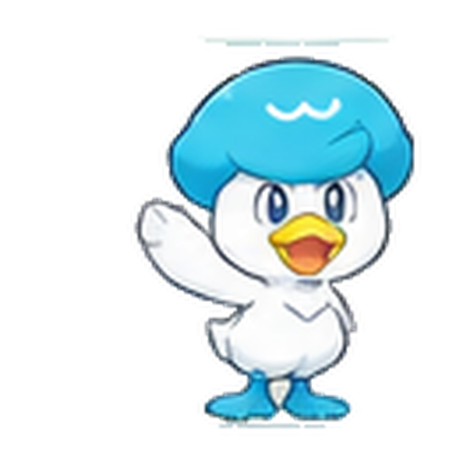
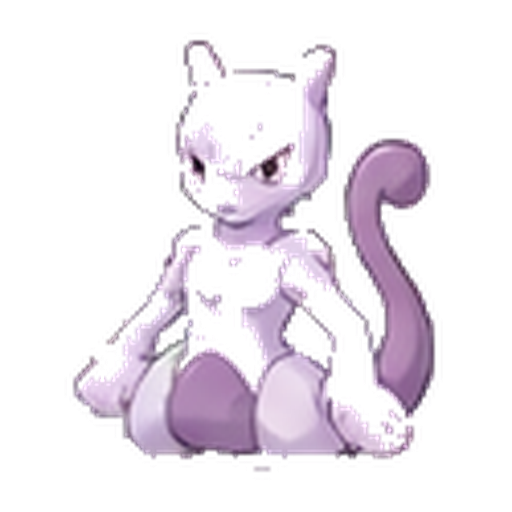

POKEQ
あそびかた
ポケモンを 9ひき そろえよう！
はじめてなら「スーパーかんたん」
空いているマスが少ない
空欄はだいたい9〜13こ。まずは少ないマスから遊べます。
1つずつ見つけやすい
むずかしい予想をしなくても、「ここはこれ！」を順番に見つけて解ける問題です。
絵を見くらべよう
たて・よこ・3×3を見て、まだいないポケモンをさがします。
1
おなじポケモンは 1かいだけ
たて・よこ・3×3のしかくの中に、おなじポケモンが2ひき入らないようにします。
たて

よこ

3×3


2
空いているマスを えらぼう
ポケモンを入れたいマスを、さいしょにタップします。
3
たて・よこ・3×3を 見よう
えらんだマスのまわりを見て、まだいないポケモンを考えます。
?
どのポケモンが
まだいないかな？
まだいないかな？
4
ポケモンを タップして 入れよう
マスをえらんだあと、「ポケモンをえらぼう」から1ひきタップします。
☝️
?
まよったら「候補メモ」
「2かな？ 5かな？」のように、まだ決められないときは、1つのマスに数字をいくつでもメモできます。
258
→
「2・5・8の
どれかかも！」
どれかかも！」
🔒
「ぜったいこれ！」なら ロック
自分で答えを決めたマスはロックできます。まちがえて変えてしまうのを防ぎます。ロックはいつでも外せます。
🔒
じぶんで確定！マスの色を 見てみよう
黄色問題のポケモン。
動かせません。
水色じぶんで入れた
ポケモンです。
5
ぜんぶ うまったら クリア！
81マスが正しくうまると、9ひきのみんなが集合します。
こまったときは
ミスをおしえる：OFF
じぶんで考えたいとき。
ミスをおしえる：ON
おなじポケモンの重なりをピンクで知らせます。
「チェック」
考えたあとに、今の答えをたしかめられます。